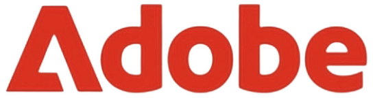
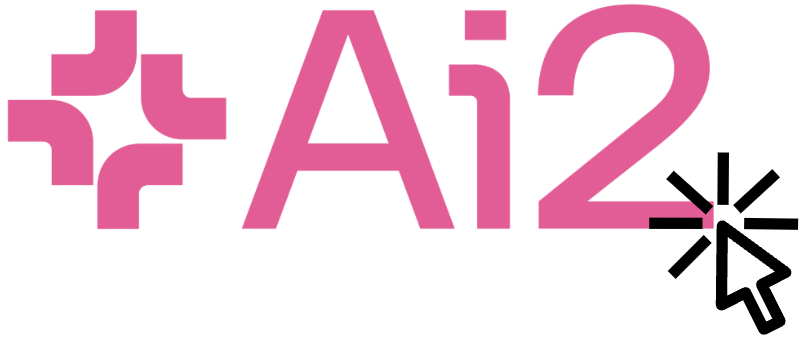
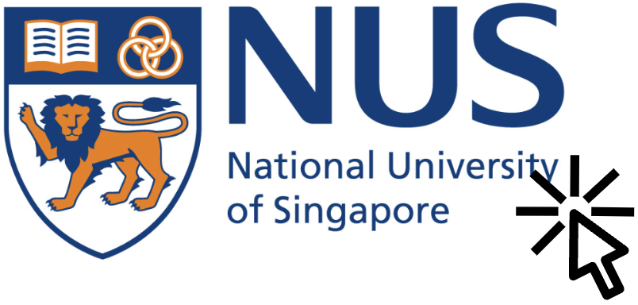
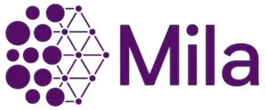
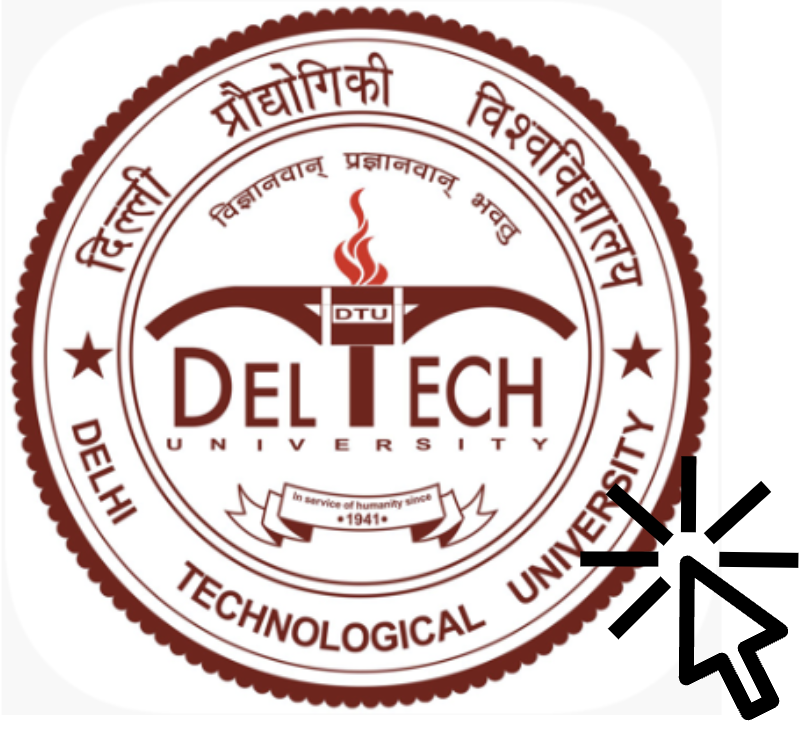
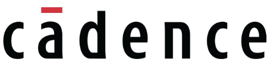
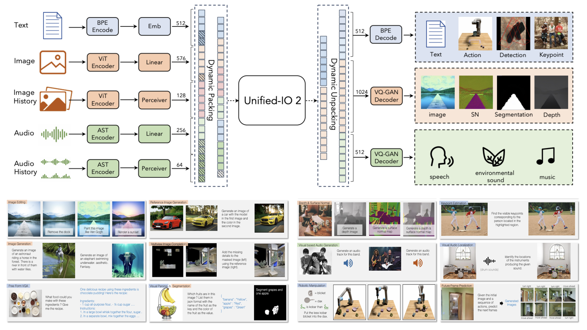
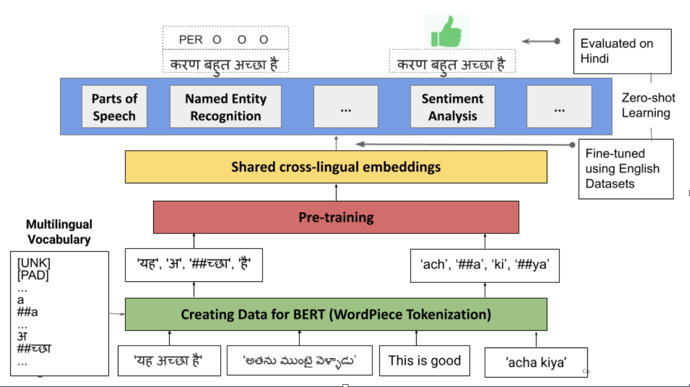

Hi, I’m Rakesh Vaideeswaran, currently working as an Applied Scientist II on the Amazon Artificial General Intelligence team.
My work focuses on building large-scale multimodal foundation models that power the next generation of AI applications.
I earned my Master’s degree in Electrical and Computer Engineering from the University of Illinois Urbana-Champaign (UIUC) in December 2022.
Beyond my work in AI, I like to identify myself as one among the small
fraction of people in the world who can solve the
3x3 Rubik’s Cube in under 10 seconds.
You can view my official Speedcubing Profile here.
Over the years, I’ve shared this passion with many kids by teaching them
how to solve the cube. Trust me when I say the Rubik’s Cube will teach you
a lot more than just bringing six colours together. For those who are
curious to know more, I highly recommend reading this insightful
article written by my
friend and fellow speedcuber, Dr. Bhargav Narasimhan.
I strongly relate with the quote: "It always seems impossible until it’s done."
My experience with the Rubik’s Cube has instilled in me the belief that any
challenge—no matter how difficult—can be overcome with persistence,
patience, and practice. This continues to motivate me both personally and
professionally in every task I pursue.
If you are interested in collaborating, would like to discuss research, or have any question feel free to reach out to me
at rakeshvaideeswaran.nitt@gmail.com.
Hover over the logos to read more about what I worked on.
Research
I have been involved in a range of research projects, collaborating across both industry and academia. My work has focused on a broad array of topics, including multimodal learning,
video understanding, natural language processing, active learning, and adversarial learning.
Meta
May 2025 - Aug 2025
Working on multimodal representation learning

Adobe Research
May 2024 - Aug 2024
Developed MAGNET a method to simultaneously enhance LLMs with generative and representation
learning capabilities
The enhanced LLMs can perform open-ended generation, text
infilling, and token-level and sentence-level representation learning

Allen Institute for AI
May 2023 - Aug 2023
Contributed to Unified-IO 2,
an instruction-following model that can parse and generate multimodal data and perform 120+ tasks
Worked on a memory-augmented multimodal encoder for understanding videos ranging from a
few seconds to tens of minutes

National University of Singapore
Apr 2022 - Aug 2022

Mila
Apr 2021 - Nov 2021

Delhi Technological University
Apr 2021 - Nov 2021
Leveraged image-based malware binary representations and techniques like ensembling and autoencoding to develop
S-DCNN and
AE-DCNN, CNNs for malware classification
Worked on improving object recognition systems in the presence of adversaries like occlusion and blurriness
Google
May 2020 - Jul 2020
Initiated the development of MuRIL,
a BERT-based multilingual language model for 17 Indian dialects and their transliterated versions
Achieved a 10.42% F1 improvement in sentiment analysis and a 9.87% in named entity recognition for Indian languages
Teaching
I have worked as a teaching assistant, where I was responsible for teaching labs, conducting office hours, grading tests,
and mentoring group projects.
CS 445: Computational Photography
Fall 2023
Contributed to Unified-IO 2,
an instruction-following model that can parse and generate multimodal data and perform 120+ tasks
Worked on a memory-augmented multimodal encoder for understanding videos ranging from a
few seconds to tens of minutes
CS 225: Data Structures and Algorithms
Fall 2022 and Spring 2023
Developed a method to simultaneously enhance LLMs with generative and representation
learning capabilities
The enhanced LLMs can perform open-ended generation, text
infilling, and token-level and sentence-level representation learning
Engineering
I have also worked briefly in software engineering roles (which helped me realize that while I love coding, my
true passion lies in research).
Google
Aug 2021 - Mar 2022
Improved Google Search’s web ranking infrastructure using deep learning for better multimodal
document understanding
Enhanced precision and recall in salient entity extraction from webpages by transitioning
from traditional ML methods to LLMs

Cadence Design Systems
Dec 2018 - Jan 2019
Developed a unified functionality interface for two version control systems
- Perforce and ClearCase
Implemented a functionality to streamline complex multi-step process of fetching file revisions
from the two version control systems using a single bash command
A full list of publications can be seen on my
Google Scholar
author page.
(* denotes equal contribution)

Unified-IO 2: Scaling Autoregressive Multimodal Model with Vision, Language, Audio, and Action
Jiasen Lu*, Christopher Clark*, Sangho Lee*, Zichen Zhang*, Rakesh Vaideeswaran, Ryan Marten, Derek Hoiem, and
Aniruddha Kembhavi
Computer Vision and Pattern Recognition, 2024

MuRIL: Multilingual Representations for Indian Languages
Simran Khanuja, Diksha Bansal*, Sarvesh Mehtani*,
Rakesh Vaideeswaran*, Atreyee Dey, Balaji Gopalan, Dilip Kumar Margam,
Pooja Aggarwal, Rajiv Teja Nagipogu, Shachi Dave, Shruti Gupta,
Subhash Chandra Bose Gali, Vish Subramanian, and Partha Talukdar
arXiv, 2021
Media Coverage:
Economic Times,
Indian Express,
Google AI Blog